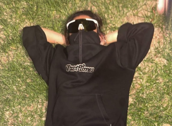
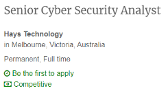

Personal Information
Name:
Christian Jerome (CJ) Adonis
Student number:
s3949551
Student email:
s3949551@student.rmit.edu.au
Some basic information about me!
Some basic information about me! I am of filipino background with both of my parents being from the philippines however I was born in Australia which technically makes me Australian??? Becuase of my parents' heritage I am able to understand tagalog as well as speak it a little bit, obviously since I was born in Australia I can also understand and speak english. I started my studies in 2009 for my first year in prep all the way till the current year of 2022 where i am now in university. One fun fact about me is that I have been playing volleyball for 5 years, 4 of those years being for school and for my last 2 years in highschool I had decided to join a club. I currently play social and club volleyball weekly!
Interests in IT
What is your interest in IT? When did your interest in IT start? Was there a particular event or person that sparked your interest? Outline your IT experience (if any)
My interests in IT are in the security portion of IT, I enjoy troubleshooting and problem solving to solve and resolve issues systems may have. I also enjoy the whole aspect of coding and creating programs that perform tasks you want for it to perform. My interests in IT sparked at quite a young age, this was due to the impact technology had on me while growing up, growing up in an ever changing world where technology was on the climb was definitely one of the main points in my life where I started to become interested in IT. I have some experience in IT, however it is more handled towards the security portion. At one point I was very interested in becoming a pen tester so I have a little experience in that. I have also had some experience in some coding, more specifically game coding, as well as web development.
Why did you choose to come to RMIT?
The reason why I chose to come to RMIT was for a couple of reasons. The main reason why I chose to come to RMIT was because of the technology courses they offered. I also heard from a wide range of people that RMIT was a very good school to go to especially when wanting to work in the technology scene. Another reason why I chose RMIT was due to the way the school was designed. I personally enjoy the non-traditional campus look that RMIT has going for it, because of its design there are many places to eat and chill after uni or even just for a break. The final reason why I chose RMIT as the school to go to was due to its location. From where I live, it is one train ride to the city that takes around 30 minutes.
What do you expect to learn during your studies?
From my studies, I hope to learn new skills and experiences that will help me move further in finding a job that interests me. At this point in time i'm quite set on becoming a cyber security analyst, they require skills such as problem solving, evaluation and assessment of potential vulnerabilities. That being said, I'm hoping to find and improve these skills while I'm at RMIT.
Ideal Job
Job advertisement (link, and snapshot)
Senior Cyber Security Analyst | eFinancialCareers
Description of the position, and what makes the position appealing to you
As a cyber security analyst at Hays Technology, it is expected of me to perform tasks such as communicating with customers, as well as developing and employing security measures to proactively detect and respond to any cyber threats in a timely manner. This is appealing to me for a couple of reasons, one reason why this appeals to me is because of the ability to design and create security controls which in return would detect and exterminate any threats. Another reason why this job is appealing to me is because I enjoy working with customers and interacting with them, it makes me feel like I'm able to do more for them when they are unsure what to do.
Description of the skills, qualifications and experience required for the position
The skills for a cyber security analyst to be successful are quite hands on skills that must be learnt to an extensive degree. For the position at Hays Technology, they’re looking for people who have skills in problem-solving, strategic thinking, evaluation, communication skills, as well as being proficient in coding.
Description of the skills, qualifications and experience you currently have
Currently I am working on developing some of the skills required for the position and further refining the skills I already possess to increase my effectiveness in this area of work. As of right now I believe my problem-solving, strategic thinking and communication are at good points that could also do with some refining to improve efficiency. As for evaluation and coding, these are things I believe I can learn at school. Through this I'll be able to perform the tasks required for this job position.
A plan describing how you will obtain the skills, qualifications and experience required for the position, building on those you have now
I plan on completing my higher education degree and graduating with a bachelor of information technology. In my studies, I have revolved my electives around areas which I feel I lack in, in terms of skill. By the time I have graduated from uni, I'm hoping to have developed said skills further and have become proficient in these skills to perform required tasks efficiently and effectively.
Personal Profile
Results of an online Myers-Briggs test

Results of an online learning style test

Results of one further online test of your choosing

What do the results of these tests mean for you?
To me these results give me more of an insight on how my personality really is. I tend to learn more when being involved myself. By doing these tests about my personality, its showed me more about how I can learn and how I perform around other people. To me it means I can further refine the way I learn as well as how I act around others in social or group events.
How do you think these results may influence your behaviour in a team?
I believe these results will help me better understand my weaknesses in terms of working in a team. With this information, I'm able to strengthen my weaker points to perform better in a team environment and help provide quality work. I also believe that I'm able to work better in a team now that I know how I work in a team, because I know how I work in a team. I'm able to act and work comfortably around people who have similar personalities to me.
How should you take this into account when forming a team?
When forming a team, I hope to work with people who mesh well with my personality. By doing this we as a team can look to work efficiently and more effective. Communication is important in a team and by being with other team members who communicate, it will help getting the best results out of the team.
Project Idea
Overview
The project idea that I have chosen to work on, is to develop a game. At core the project will be an open world game with many elements of action, adventure and exploration that also leaves the player with a sense of customizability in terms of how they want to play the game. This is able to happen with the implementation of a skill system in which the player can spend points in different areas to give their character better stats in said areas. This game will be able to be played alone or with another friend, however this point will only be accessible after a certain point after the player has progressed.
Motivation
For some time now, I've had the idea of creating a game like this. With the release of the new souls like game Elden Ring, its popularity has shown that many people who enjoy the genre or not are interested in games that provide an open world experience while also providing the player with the ability to customise and play the game however they want. Games that are hard yet rewarding at the same time also seem to appeal to a wide range of people who play games and with that in mind, creating a game that branches off of the same concepts tends to be a great place in the market for a game.
Description
The game that I choose to develop will be able to be played on a range of different platforms to ensure that everyone whether they are interested in the game will have access to it. As for if the product will be free to play or not is yet to be decided. The game I have in mind will be heavily story driven and will provide the player with great storytelling as well as an action filled adventure. The game will have elements of exploration, character customization, and a level up system. The game will be an open world action adventure game that sees the player travelling around the world in search to slay a group of enemies he once called his closest friends. As the player, they will also have a choice on whether they want to complete the game alone or with another friend, keeping in mind that co-op is only accessible after a certain point in the game. As for the game itself, the player will have access to many different stats that they are able to spec into to play the game however they want, some examples of these stats are health and stamina. At the beginning of the game, the player will be able to customise the way that their character looks, they will also have the ability to add a few starting points into some stats of their choice, this will influence the player to start thinking early on how they want to play the game, to further the players ability to play how they want, they will have access to a range of weapons that they can choose form which will give the player a sense of freedom in how they want to enjoy the game. Because of the feature to put points into different stats and choose starting weapons, the player will be able to enjoy the game however they want with the ability to change that whenever they want. The game will have a total of 7 main bosses that the player must defeat in order to complete the full game. Throughout the game, the player will be able to make choices throughout that will affect the way that the game plays out, after all the bosses have been defeated, the player has the ability to replay the game and choose different outcomes to those that have been previously selected. To further the choice system in the game, after a boss is defeated, the player will have the option of either eliminating the boss or forgiving the boss, each option will have its own effects on the player and the world around it. Like stated previously, the player may change these outcomes once the game has been completed.
Tools and Technologies
For the development of my game, there are a couple of tools and technologies required to start up the project. One of the more obvious tools required to start the project is a working private computer that has access to the internet. With this computer I am able to develop the game properly, the reason I stated a private computer was necessary was so I’m able to develop the game at home. As for the technologies, I plan on actually developing the game on unity, unity has access to a range of tools that would make the game development process much easier, because I have prior knowledge of game development on unity, it helps to develop with an application I am already somewhat familiar with. Finally, I plan on saving backups on github. This helps to keep progression of milestones, if something goes wrong then i am able to have backup saves stored online. Because github can be stored online and accessed from different devices, it allows for me to develop the game at home, as well as in different locations if necessary.
Skills Required
For this project, the main skills required would be to have some prior knowledge on coding, as well as game development. To further this point, having some prior knowledge to how unity works will be necessary in order to develop the game. With this knowledge, I’m able to develop the game efficiently, spending more time on the actual development rather than learning how to use the software in order to actually develop and start the project. An additional skill that would also help with the development of the game would be game design. Knowing what makes a game work is important for a successful project, with this I am able to focus on certain areas of a game, rather than spending time on areas of the game that are not necessary or are less important.
Outcome
Assuming the project is a success, I plan on developing the game further to refine the product and hopefully come out with a public release of some sort. With feedback from the player base, I am able to create a better experience for the players who enjoy the game. If the project was to fail, I plan on locating the issues that went wrong with the project in the first place. Once these issues have been located, further development will be necessary to create a better product for people. If all goes well, as stated before I hope to come out with a public release for people to play the game.